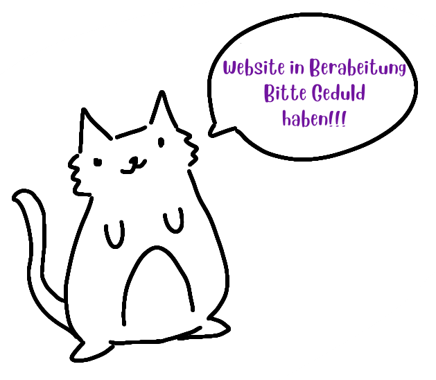

Die Partei hatte ursprünglich ihren Ursprung unter dem Namen Katzenpartei, welchen wir jedoch schnell änderten, als wir bemerkten, dass es diesen Namen bereits mehrfach gab. Die beiden Gründerinnen sind Catjana und Miaunna. Die Idee entstand zufällig im Politikunterricht, wo wir sie zunächst als Spaß betrachteten. Doch kurz darauf folgten Sticker, Plakate und sogar eine Webseite. Wir erhielten Unterstützung von mehreren Menschen, die Teil unserer Partei sein wollten. Nun möchten wir noch mehr Propagan- ... ich meine Werbung für unsere Partei machen. Wir sind bereit mehr Mitglieder für dies Partei aufzunehmen. Da wir noch niemanden für unsere Finazen haben, biete ich hier Christian Linder offizel an, bei uns zu arbeite. Ist ja nicht so als hätte er was besseres vor. Nun mehr zur allgemeinen Geschichte der Katzen. Schon früh waren Katzen ein essenzieller Bestandteil unserer politischen Überzeugungen. Schauen wir auf eine der ersten fortgeschrittenen Kulturen der Welt: die Ägypter. Sie verehrten Katzen als Götter und behandelten sie mit höchstem Respekt. Was ist geschehen, dass dies heute nicht mehr der Fall ist? Haben wir als Gesellschaft die Katzen im Stich gelassen? Auch in anderen Ländern waren Katzen stets gern gesehen. Im alten Japan galten sie als Glücksbringer und waren ein beliebtes Symbol für Wohlstand. Bergab ging es erst im Mittelalter. Katzen wurden als Begleiterinnen von Hexen betrachtet, mit ihnen verbrannt und entehrt. Wir wollen die Geschichte ändern. Unser Ziel ist es, ein traditionelles Katzenbild zurückzubringen, in dem Katzen gleichwertig wie Menschen behandelt werden.
